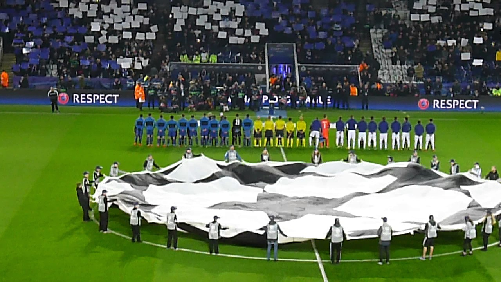

ANTHEM

The Champions League anthem is played before the start of each match as the two teams are lined up while the Champions League logo is displayed in the centre circle.
The chorus contains the three official languages used by UEFA: English, German, and French. The climactic moment is set to the exclamations ‘Die Meister! Die Besten!
Les Grandes Équipes! The Champions!’. The anthem's chorus is played before each UEFA Champions League game as the two teams are lined up, as well as at the beginning
and end of television broadcasts of the matches. In addition to the anthem, there is also entrance music, which contains parts of the anthem itself, which is played
as teams enter the field. The complete anthem is about three minutes long, and has two short verses and the chorus.
Special vocal versions have been performed live at the Champions League Final with lyrics in other languages, changing over to the host nation's language for the chorus.
These versions were performed by Andrea Bocelli (Italian) (Rome 2009, Milan 2016 and Cardiff 2017), Juan Diego Flores (Spanish) (Madrid 2010), All Angels (Wembley 2011),
Jonas Kaufmann and David Garrett (Munich 2012), and Mariza (Lisbon 2014). In the 2013 final at Wembley Stadium, the chorus was played twice. In the 2018 and 2019 finals,
held in Kiev and Madrid respectively, the instrumental version of the chorus was played, by 2Cellos (2018) and Asturia Girls (2019). The anthem has been released commercially
in its original version on iTunes and Spotify with the title of Champions League Theme. In 2018, composer Hans Zimmer remixed the anthem with rapper Vince Staples for
EA Sports' video game FIFA 19, with it also featuring in the game's reveal trailer.